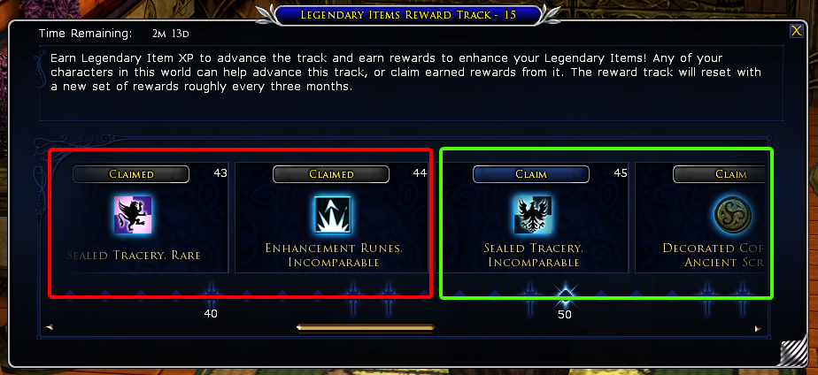
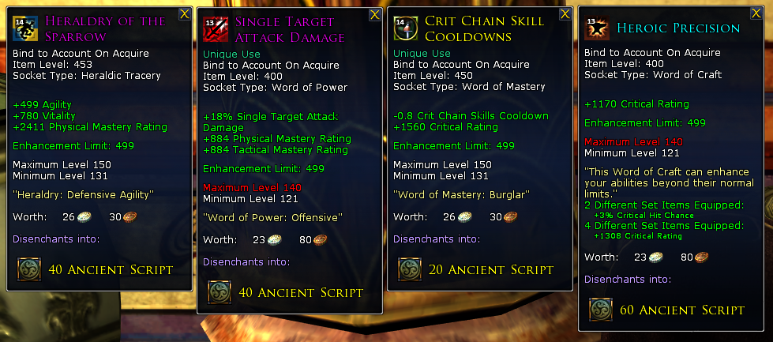

Legendary Items (LI) Systems FAQ
What is this LI system everyone talks about and why should I care?
LI system is a combination of Legendary Weapon and Class Item that you will get when you approach level 50 through completing a quest line. Depend on your character class the LI items you can equip vary, however these will replace your weapon at that point in time and you will continue to use it for the rest of your LoTRO career untill you reach the max level. You can 'grow' your LI weapon as you level up by 'reforging' (both the weapon and class item) at the Forge-master NPC.
So does this mean after getting the LI I don't need to use any other weapon?
Yes and no. If your class is able to equip a 2-hand weapon, the answer is yes. You will use a 2H LI weapon for the rest of the game. Dual wielding classes on the other hand will still need to equip a non-legendary weapon on their off hand. For example, a Burglar will equip a LI dagger in main hand and a normal dagger in off-hand. Same goes for a Guardian, a LI weapon on his main hand and a normal shield in off-hand. Each character can only wield a maximum of two LIs: a weapon and a class item.
How do I get the LI and at what level can I get them?
- Upon reaching level 45, you start the quest chain, that can be picked up from the NPC Ráthwald. He can be found standing near the Wall of Moria in Echad Dunann settlement within the Eregion region. To get to him:
- Go to Rivendell, make sure to pick up Rivendell Stable Master access
- Travel down south through Trollshaws traversing these stable masters:
- Rivendell --> Scout's Camp --> Echad Candelleth --> Echad Eregion --> Echad Dunann`
- Note: along the path between Echad Eregion and Echad Dunnan, a level 45 character might encounter higher level monsters. Do not engage in fights and run past them until you meet Rathwald near the Wall of Moria.
- Accept the quest *Chapter 1: Strangers in Hollin* and enter Moria through the portal just behind him.
- Complete [this](https://lotro-wiki.com/wiki/Category:Vol._II._Book_1_Quests) quest chain and towards the end you will be rewarded with a passive skill (trait) called "*Seeker of Deep Places*" which allows you to use Legendary Items and also allows you to enter Moria. Make sure to complete this chain till the end.
- The Expedition Quests while inside the Wall of Moria can be skipped if you are in a hurry but they do give some decent gear and should do them at least once on one of your characters.
- You can barter new LIs (for example to try out a different set such a DPS set and a tank set) using Ancient Scripts at the Archive of Traceries in the Last Homely House.
Okay now I get the LI! How can I customise them?
- Your legendary weapon and class item can be modified with Traceries. Think of them like runes or gems that go into sockets of the main item in other games. Each Tracery has its own stats, effects, modifiers and other properties.
- You can insert Traceries into the 'sockets' of your LIs. Depending on the level of the LI, the numbers and types of sockets (or slots) available to you changes. To add/remove Traceries into sockets, open your character panel by pressing `c`, drag the LI to the Socketed Equipment icon, located under your boot equipment slot, to get started.

Where do I get these Traceries?
- You get them as quest rewards, mission rewards, LI track rewards, drops from monsters etc. You can also purchase them from The Archive of Traceries up on the second floor, to the left as you enter The Last Homely House in Rivendell using Ancient Scripts as currency.
Wait a minute, another currency, seriously? How do I get Ancient Scripts?
- The most common way to obtain them is by progressing the LI Track. They can be obtained by disenchanting some high level items or as quest rewards.
Okay great, yet another system! What's up with this LI Track!?
- LI Track or Legendary Item Reward Track is a seasonal progression system. To access it you must be level 45 or higher and also must have the trait "Seeker of Deep Places" we discussed above (see now everything kind of ties togher isn't it? :P)
- To progress through the LI Track you need Legendary Item Experience (IXP) which you gain by completing quests, similar to your character XP.
- You can access the LI Track by pressing `shift + i`as default keys.
- You can claim the rewards as they become unlocked. See below ~ Red claimed, Green not claimed yet.
- When you progressed up to level 100, and there is time still left in the season, the additional rewards can still be claimed.
- It is very important to claim the rewards before the season finishes. Any unclaimed rewards will be lost once the season is concluded.

Back to Traceries, tell me more! I'm intrigued!!
There are 4 categories that you can place your Traceries:
- **Heraldric Tracery:** This Tracery slot includes stat buffs along with the damage type of your weapons. Only one Heraldric Tracery can be slotted per item. (NOTE: Heraldric Traceries appear in the UI once the item has been initially Reforged.)
- **Word of Power:** These are specialized Traceries meant to fill various roles with your weapons and items, including damage and healing types like area of effect, single target, and healing/damage over time. These Traceries are also where you will get Avoidance, Incoming Damage reduction, Morale Increase, Induction speed, and more. Two Word of Power Traceries can be slotted per weapon, and three per class item (except for the Hunter’s Bow and Warden’s Javelin, which are slotted as class items rather than weapons).
- **Word of Mastery:** These Traceries provide various benefits of specific value to your class. You will unlock additional Words of Mastery Tracery slots over time, up to a current cap of six Words of Mastery Traceries.
- **Word of Craft:** These are general single stat increases that also provide various Set Bonuses. Over time players will be able to slot up to three Word of Craft Traceries.
Below picture provides an example of each Tracery type. Notice that some of the Traceries has a label *Unique Use* they can only be equipped once per character (not equipment!)

Woah, this is all very cool and I'm so excited now! I am class XXX, what Traceries should I be using?
- As a start, head over to https://lotrohq.com/ and look up your class and trait and follow the suggestion there. It may not be completely up to date and if you found a more recent Tracery recommendation, share a link via a follow up post!
All these numbers on the LI weapons and traceries are confusing! Help!!
- Numbers in green represent Item level of the LI weapon itself and it dictates how much slotted traceries can be upgraded. In this picture you can see a few traceries are upgraded to 530 which is the same as iLevel of the LI.
- Numbers in yellow, in each tracery, represent how much more they can be enhanced (upgraded) and it needs to be the same or more than the iLevel of the LI. In this example the LI has iLevel 530, traceries have the limit of 549, so they are usable and the correct tier.
- Numbers in pink represent the minimum level of the player who can wield this weapon, in this example only a level 150 player can use this weapon. Now traceries, on the other hand, comes with a level range. In this example both of them are ranging between 141-160. Since the weapon's level is 150 they can be used. The number '15' shown as a superscript on the icons traceries show the tier of the tracery which sits within the range of the weapon and other tracery levels. In other word it's a quick way to check if you're slotting the correct (i.e. on-level) tracery or lower level one. You can obviously equip upper level tracery.
- On each tracery slotted, the stats are of two kinds, primary (cyan colour) and secondary (orange) number(s). These numbers increase as you upgrade traceries. Usually the the % numbers don't increase only raw numbers do.